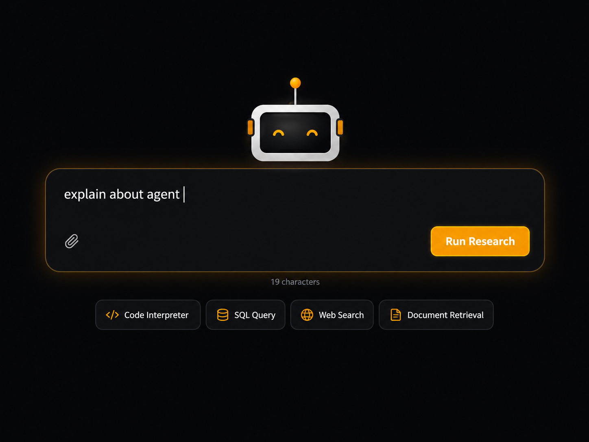

Agentic Research Intelligence System
A production-grade agentic AI system built on LangGraph that decomposes natural language research queries into dependency-aware parallel subtasks, executes them across heterogeneous tools and synthesizes citation-grounded reports through an iterative critic-reflection loop.
View complete project →